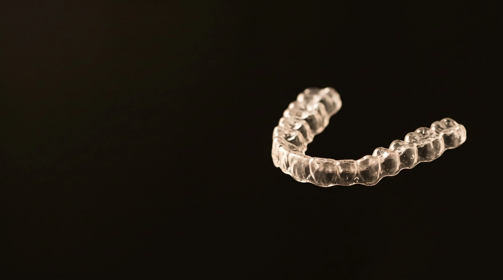
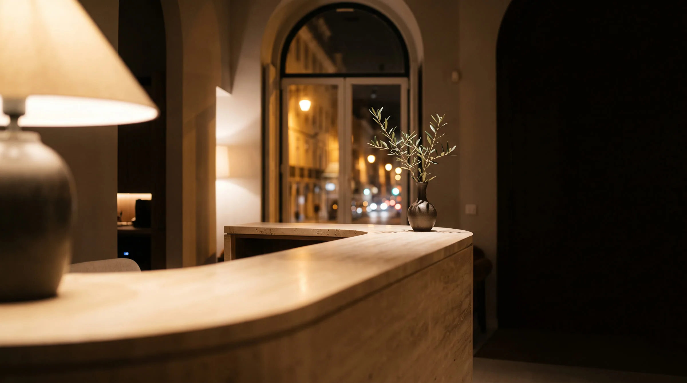

Um dente fixo, com raiz própria.
Substituímos dentes perdidos por implantes em titânio colocados com cirurgia guiada. A coroa é feita no nosso laboratório para combinar com os dentes vizinhos.
3 a 6 meses
45 a 90 min por implante
Anestesia local, sedação opcional
Revisões do 1.º ano incluídas
Para quem perdeu um ou vários dentes, usa uma prótese removível que se move ou tem uma ponte antiga a falhar.
- Falta de um dente isolado
- Vários dentes em falta na mesma zona
- Trocar uma prótese removível por dentes fixos
- Dentes sem possibilidade de recuperação
Do planeamento ao resultado, em quatro etapas.
Avaliação 3D
TAC de baixa dose e scan intraoral para medir o osso disponível.
Cirurgia guiada
Guia impressa a partir do plano digital, com incisões mínimas.
Integração
Dois a quatro meses com dente provisório, conforme o caso.
Coroa definitiva
Cerâmica feita no nosso laboratório e ajustada em consulta.
O que nos perguntam mais vezes.
Não encontra a sua dúvida? Escreva-nos e respondemos no próprio dia útil.
Enviar perguntaA cirurgia dói?
Faz-se com anestesia local e, para quem prefere, sedação consciente. A maioria dos pacientes controla o desconforto com analgésicos comuns durante dois ou três dias.
Fico sem dente durante o tratamento?
Na maioria dos casos, não. Colocamos um provisório no mesmo dia, para que nunca saia da clínica sem dentes visíveis.
Quanto tempo dura um implante?
Com boa higiene e revisões regulares, um implante pode durar décadas. A coroa pode ser substituída ao fim de muitos anos, sem mexer no implante.
Tenho pouco osso. Posso fazer implantes?
Muitas vezes sim, com regeneração óssea ou implantes de dimensões adaptadas. Só a avaliação 3D permite responder com certeza.
Pode também precisar de…

Ortodontia invisível
Alinhadores transparentes planeados em 3D. Vê o resultado final antes de começar.
Saber mais
Facetas e estética
Lâminas de cerâmica com poucas décimas de milímetro, desenhadas para o seu rosto.
Saber mais
Branqueamento
Clareamento supervisionado em consultório e em casa, sem sensibilidade desnecessária.
Saber mais
Descubra se os implantes são para si.
Na consulta de avaliação fazemos o exame 3D, medimos o osso disponível e entregamos um plano escrito com prazos e valores.